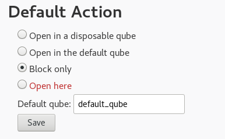
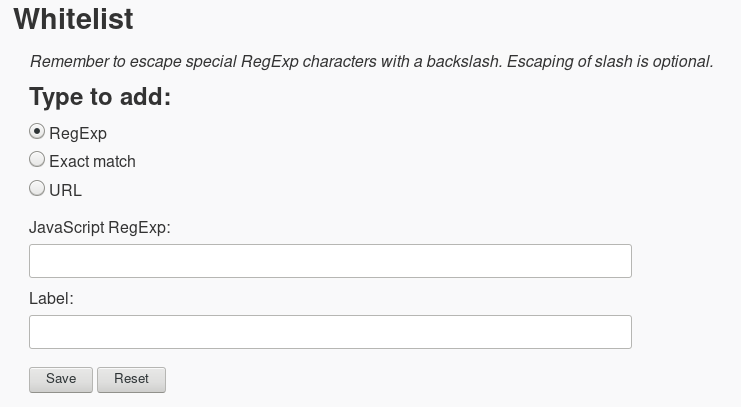

Hi, and thanks for installing Open in Qube! This page will help you to use this extension effectively.
Usage: Settings
"Open in Qube" is a browser extension that block and redirect to another Qube, URL that doesn't match against a whitelist entry.
Through the settings page you can customize the default responsible Qube. It could be a disponsable Qube or a specific Qube. Furthermore it's possible to disable the extension entirely. The default is a disponsable Qube.
Here a screenshot of the settings section that rule with this behavior:

Usage: Whitelist
The whitelist is the most critical part of the extension. It permits you to specify if an URL will be opened in the current Qube. Every whitelist entries could be associated with a descriptive label.
Initially the whitelist is empty. So every URL will be blocked and redirected. For this reason before you start to surf the web you should start to populate the whitelist.
The whitelist is accessible through the settings page and its entries are of three types. Furthermore you can specify if every linked resource with a permitted URL will be permitted.
The three types of entries are:
RegExp
Exact Match
URL
Every entry type affects how an URL will be matched.
The "RegExp" type
This is the most flexible type. In fact you can describe, through JavaScript RegExp, whitelisted URL(s). Special careful should be used while defining an entry of this type. Remember that if an URL is matched against a whitelist entry it will be opened in the current Qube.
Here a screenshot of the input fields:

The "Exact Match" type
This is the most restrictive type. In fact with this type you can specify a string that will be matched against an URL if and only if they are equally.
Here a screenshot of the input fields:
The "URL" type
This type permits you to add an entry specifying URL's componenent. Specifically:
Scheme, it can also be ignored. So every scheme will match